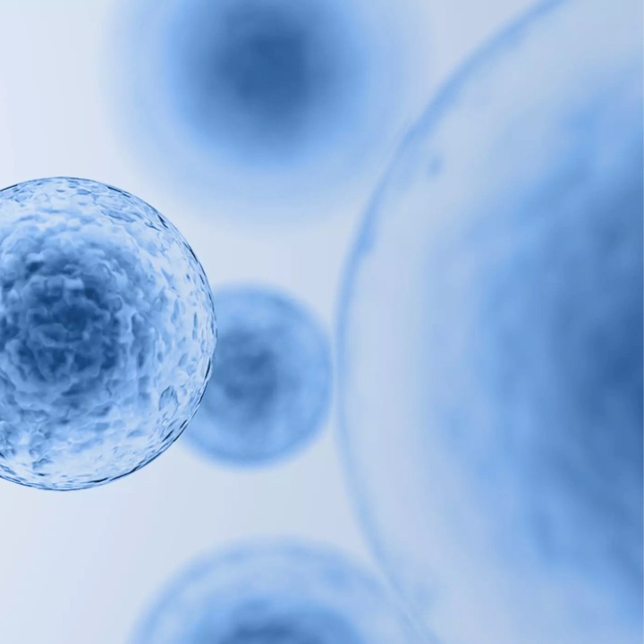
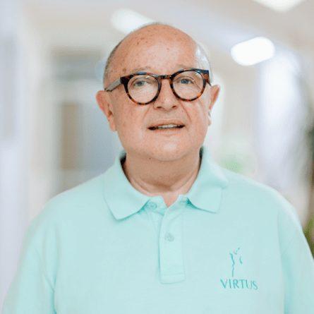
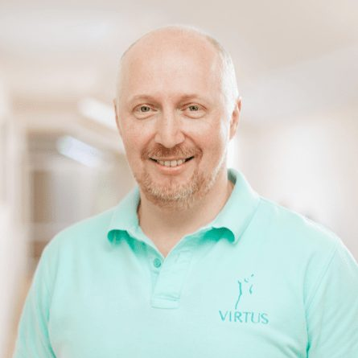
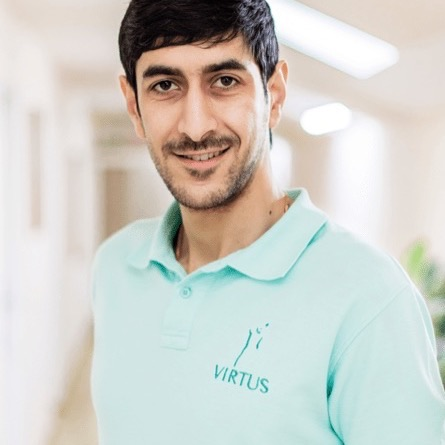
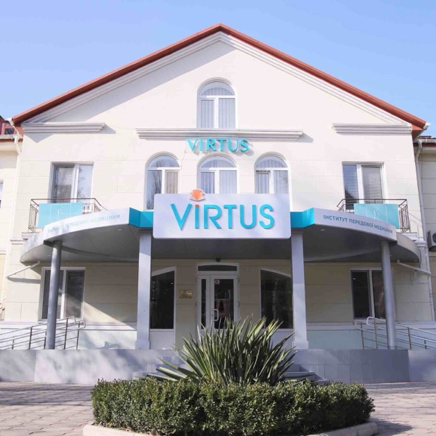
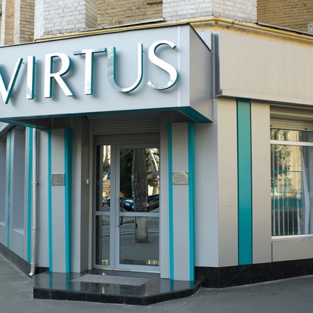

Клітинні технології
в пластичній хірургії
Ще кілька десятків років тому пластична хірургія асоціювалася виключно зі скальпелем і силіконовими імплантатами. Сьогодні вона поєднується з клітинними методиками — власними фібробластами, стовбуровими і жировими клітинами.
Напрямок представлений в філіях:
- Одеса, Суднобудівна, 1Б
- Одеса, Буніна, 10
- Київ, Костянтинівська, 57

Види послуги
- Збільшення грудей власними стовбуровими клітинами Virtus
- Контурна пластика обличчя біоімплантатами з власних жирових клітин Virtus
- Контурна ментопластика власними жировими і стовбуровими клітинами
- Контурна ринопластика власними жировими і стовбуровими клітинами Virtus
- Ліпомоделювання
- Корекція ліподистрофій в області сідниць Virtus
- Омолоджуючі операції з введенням фібробластів або стовбурових клітин
- Клітинні технології в лікуванні ускладнень традиційних пластичних операцій Virtus
- Клітинні технології в лікуванні посттравматичних і післяопікових рубців Virtus
Наш пріоритет
Пластика створює форму. Клітини повертають шкірі молодість.
В Інституті VIRTUS уперше у світі успішно виростили жирові клітини зі стовбурових — для пацієнтів, у яких власної жирової тканини для процедур недостатньо. Клітинні технології застосовуються не лише для заповнення втрачених обʼємів, а й для контурної пластики, омолодження та відновлення шкіри після невдалих втручань.
Пластична хірургія створює нові форми і видаляє надлишки шкіри, клітинна терапія повертає їй молодість. Комбінація двох технологій покращує результат операції, скорочує реабілітацію і зводить до мінімуму небажані явища.
Застосування клітинної терапії
- Контурна пластика обличчя біоімплантатами з власних жирових клітин
- Контурна ментопластика власними жировими і стовбуровими клітинами
- Контурна ринопластика власними жировими і стовбуровими клітинами
- Збільшення грудей власними стовбуровими клітинами
- Омолоджуючі операції з введенням фібробластів або стовбурових клітин
- Ліпомоделювання
- Корекція ліподистрофій в області сідниць
- Клітинні технології в лікуванні ускладнень традиційних пластичних операцій
- Клітинні технології в лікуванні посттравматичних і післяопікових рубців
Наш пріоритет
Пластика створює форму. Клітини повертають шкірі молодість.
-

-

-

-
Досвідчений та чуйний лікар. Отримав змістовну консультацію та гарне ставлення. Звертався стосовно послуги плазмаферезу — гарний сервіс у безпечних та комфортних умовах.
- Філія VIRTUS
- Одеса, Суднобудівна, 1Б
- Напрямок
- Клітинні технології SmartCell
- Фахівець
- Лісовик Сергій Григорович
Відгук на сайті
-
Приїжджаємо з чоловіком у клініку на плазмаферез, не перший місяць. Дуже гарний лікар, фахівець своєї справи, завжди привітний — усе проходить швидко і без проблем.
- Філія VIRTUS
- Одеса, Суднобудівна, 1Б
- Напрямок
- Клітинні технології SmartCell
- Фахівець
- Лісовик Сергій Григорович
Відгук на сайті
-
Все виконано чудово.
- Філія VIRTUS
- Одеса, Суднобудівна, 1Б
- Напрямок
- Клітинні технології SmartCell
- Фахівець
- Лісовик Сергій Григорович
Відгук на сайті
-
Пояснили кожен крок і показали результат на УЗД. Це те, чого бракувало в інших клініках.
- Філія VIRTUS
- Київ, Костянтинівська, 57
- Напрямок
- Пластична хірургія
- Фахівець
- Кадочніков Сергій Валерійович
Відгук на сайті
-
Записалась на консультацію за рекомендацією. Лікар детально розібрав мою ситуацію, без нав'язування процедур.
- Філія VIRTUS
- Одеса, Суднобудівна, 1Б
- Напрямок
- Пластична хірургія
- Фахівець
- Саркісян Арман Грайрович
Відгук на сайті
Відгуки про лікарів напрямку
Консультація
Лікування стовбуровими клітинами починається з консультації
Прийом веде керівник клініки, доктор медичних наук, професор Володимир Цепколенко.
Записатись на консультаціюНапрямок представлений у філіях
-

VIRTUS · Інститут передової медициниОдеса, Суднобудівна, 1Б
- Пн–Пт 08:00–18:00
- Сб 09:00–17:00
- Нд вихідний
-

Медичний інститут VIRTUS у КиєвіКиїв, Костянтинівська, 57
- Пн–Пт 09:00–18:00
- Сб 09:00–18:00
- Нд вихідний